Progressive Web Apps
@nolanlawson
@nolanlawson


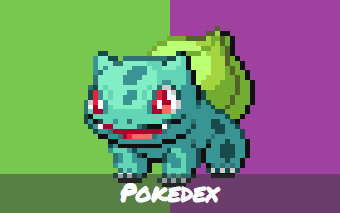
What is a
"progressive web app"?
Nebulous term, somewhat like:
- Ajax
- Responsive
- Mobile-first
- etc.
Coined by Alex Russell of Google
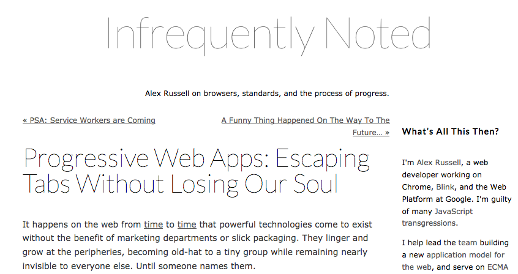
https://infrequently.org/2015/06/progressive-apps-escaping-tabs-without-losing-our-soul/
Alex Russell
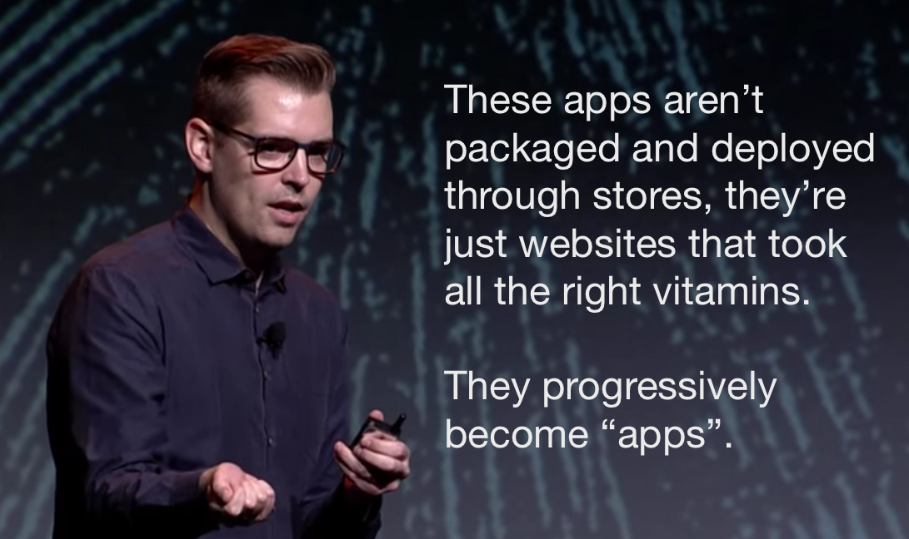What makes a progressive web app?
- Native-like characteristics
- Promoted by browser chrome
Native-like characteristics
- Works offline
- Launches from home screen
- Hides URL bar
- Branded colors
- "First class" treatment in OS
- Push notifications (optional)
- Background sync (optional)
Hamster break
Promoted by browser chrome
- "Add to home screen?" popup
(aka the "carrot")
https://medium.com/@slightlylate/mmmmmmm-carrots-6b3a53719008#.ece5xoohm
Chrome
Opera
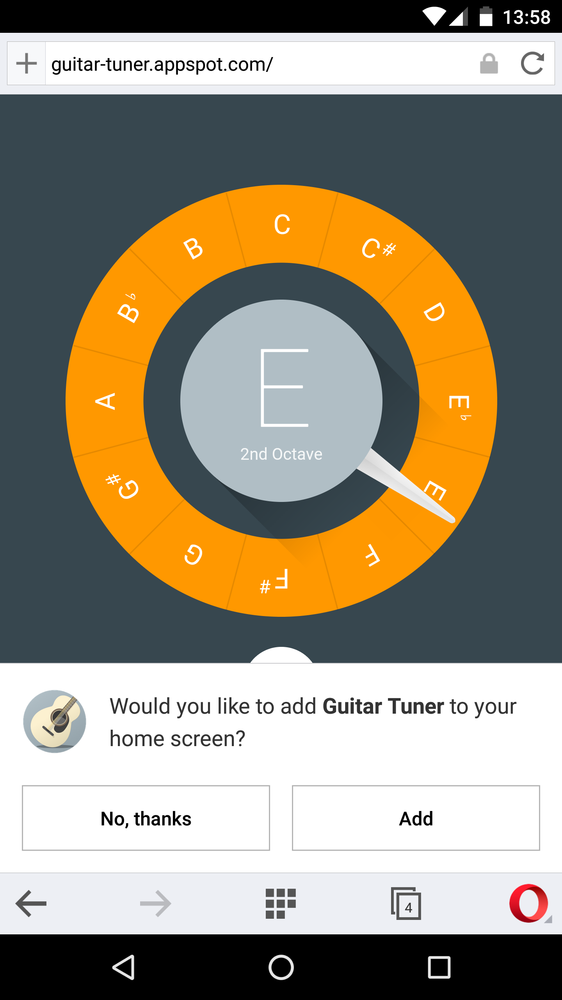Firefox
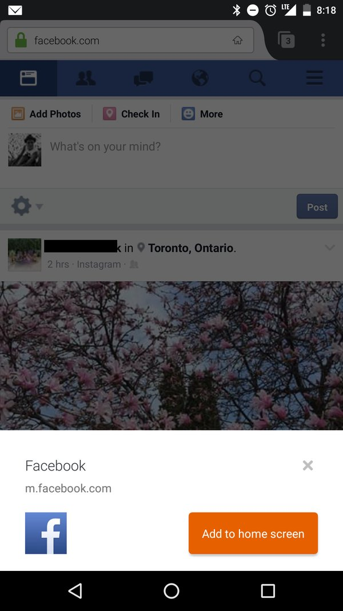How do we eat that sweet, sweet carrot?

Requirements for the install banner
- Web Manifest file
- short_name
- URL
- PNG icon
- Service Worker
- HTTPS
https://developers.google.com/web/updates/2015/03/increasing-engagement-with-app-install-banners-in-chrome-for-android
Web App Manifest
Say goodbye to this garbage
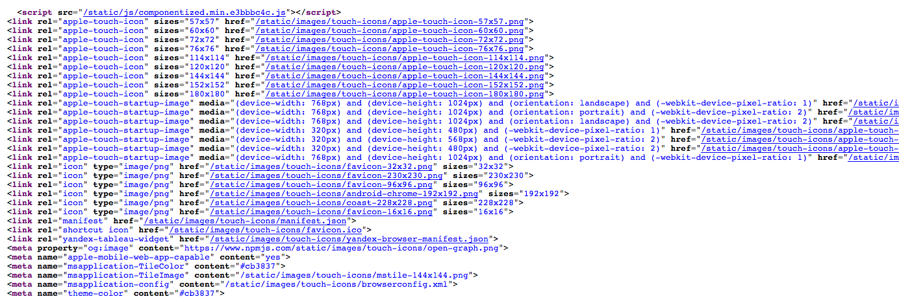Web Manifest file
<head>
<!-- ... -->
<link rel="manifest" href="manifest.json">
<!-- ... -->
</head>
http://w3c.github.io/manifest/
Manifest JSON file
{
"short_name": "Pokedex.org",
"name": "Pokedex.org",
"display": "standalone",
"start_url": "index.html?launcher=true",
"theme_color": "#a040a0",
"background_color": "#EEEEEE",
"icons": [
{ "src": "img/icon-48.png", "sizes": "48x48", "type": "image/png" },
{ "src": "img/icon-96.png", "sizes": "96x96", "type": "image/png" },
{ "src": "img/icon-144.png", "sizes": "144x144", "type": "image/png" },
{ "src": "img/icon-196.png", "sizes": "196x196", "type": "image/png" }
]
}Service Worker
Bad old days: App Cache
CACHE MANIFEST
# rev 2016-04-28 08:44:48 -0400
CACHE:
/adapters.html
/api.html
/static/css/pouchdb.css
/static/favicon.ico
/static/js/code.min.js
/static/img/fauxton.png
/static/img/kittens.jpg
http://code.jquery.com/jquery.min.js
http://fonts.googleapis.com/css?family=Lato:400,700|Open+Sans:400,700
NETWORK:
*Service Worker in a nutshell
- Web Worker on steroids
- Process/security of Shared Worker
- Programmable client-side proxy
- HTTPS required (except localhost)
Web Workers vs Service Workers
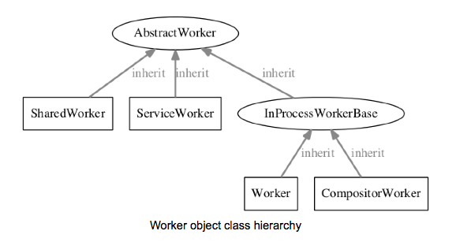
Source: Blink report on workers
Useful SW tools
- sw-precache
- sw-toolbox
- offline-plugin (webpack)
- UpUp
Hamster break
Soft requirements for PWAs
- Theme color
- App shell
- IndexedDB
- 60FPS animations
http://stackoverflow.com/tags/progressive-web-apps/info
Theme color
<head>
<!-- ... -->
<meta name=theme-color content=#a040a0>
<!-- ... -->
</head>
https://github.com/whatwg/html/commit/05e4a1f6c4941273baa647b8e889d2db7fd9bd88
Dynamic theme color
var meta = document.head.querySelector('meta[name="theme-color"]');
meta.content = '#4169E1';App Shell

https://developers.google.com/web/updates/2015/11/app-shell
AKA:
- Progressive rendering
- Progressive enhancement
- Not showing a blank screen w/o JS
(Simulated 2G)
Strategies
- Server-side HTML
- React
- Ember Fastboot
- Hyperscript (virtual-dom)
- etc.
- Turn off JS to see effect
- Load in 2G to see progressive loading
IndexedDB/WebSQL for data storage
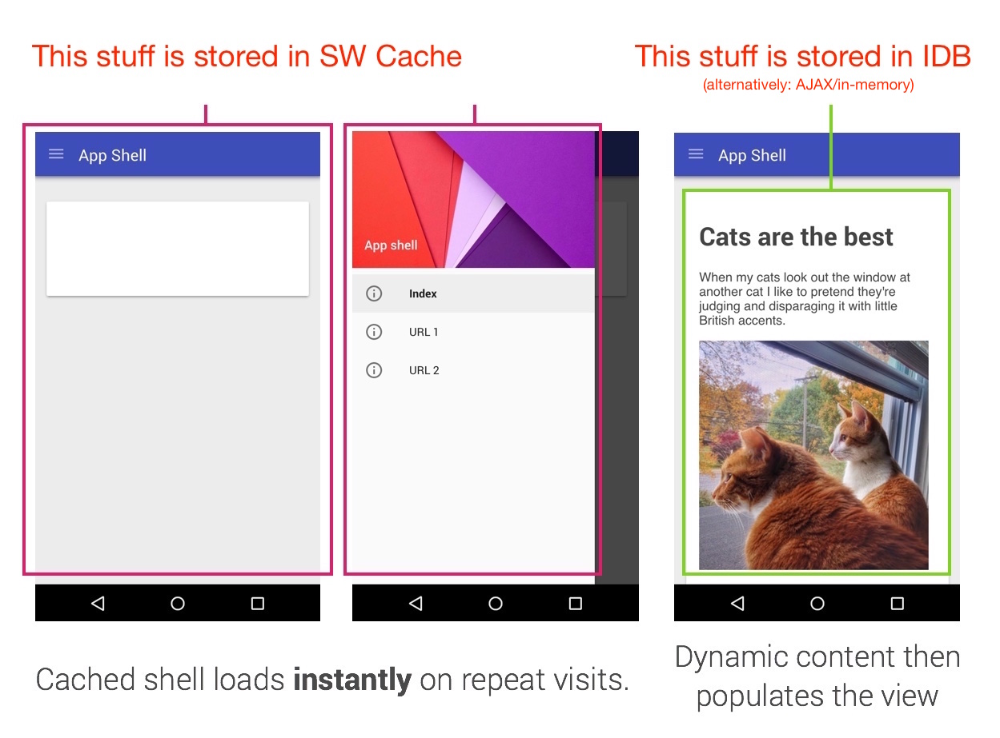
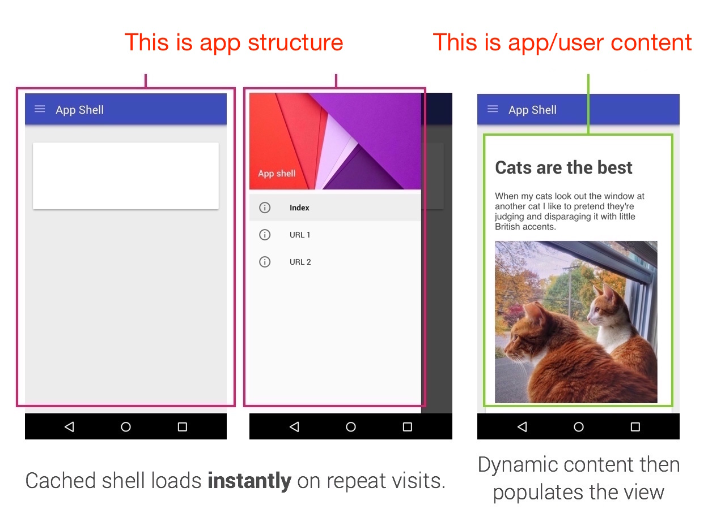
Pokédex IDB
4.0M Chrome / 5.6M Firefox
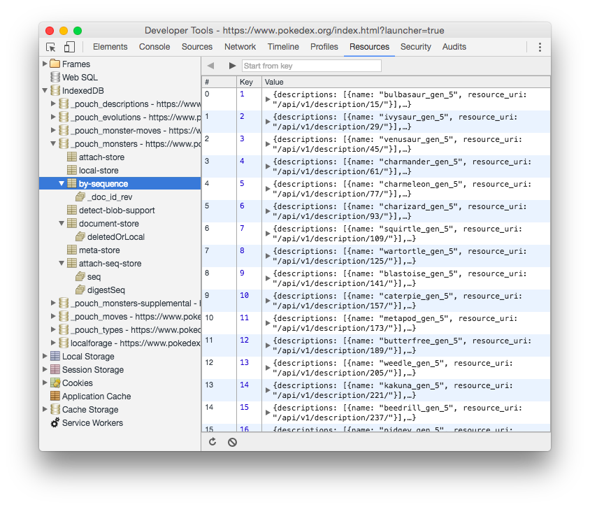Why IDB + WebSQL?
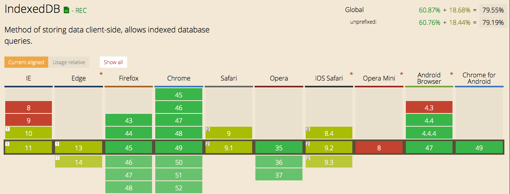IndexedDB libraries
- LocalForage
- PouchDB
- Dexie
- YDN-DB
- indexeddb-promised
Extra credit: web workers
- IDB is fast, but blocks the DOM
- Web Workers mitigate this
- No IDB+WW in Safari; use pseudo-worker
http://nolanlawson.github.io/database-comparison/
http://nolanlawson.com/2015/09/29/indexeddb-websql-localstorage-what-blocks-the-dom/
https://www.npmjs.com/package/pseudo-worker
http://nolanlawson.com/2015/09/29/indexeddb-websql-localstorage-what-blocks-the-dom/
https://www.npmjs.com/package/pseudo-worker
60FPS animations
Only use hardware-accelerated:
- transform
- opacity
http://www.html5rocks.com/en/tutorials/speed/high-performance-animations/
FLIP animations
- Flexibility of JS, performance of CSS
- Technique, not a library
- First - Last - Invert - Play
https://aerotwist.com/blog/flip-your-animations/
See the Pen FLIP animations demo by Nolan Lawson (@nolanlawson) on CodePen.
Workshop time!
https://github.com/google/web-starter-kit
Offline Star Wars app
https://github.com/nolanlawson/star-wars-offline
Extra credit
- Multiple tabs
- Detail page with animations
- IndexedDB
- Web Workers